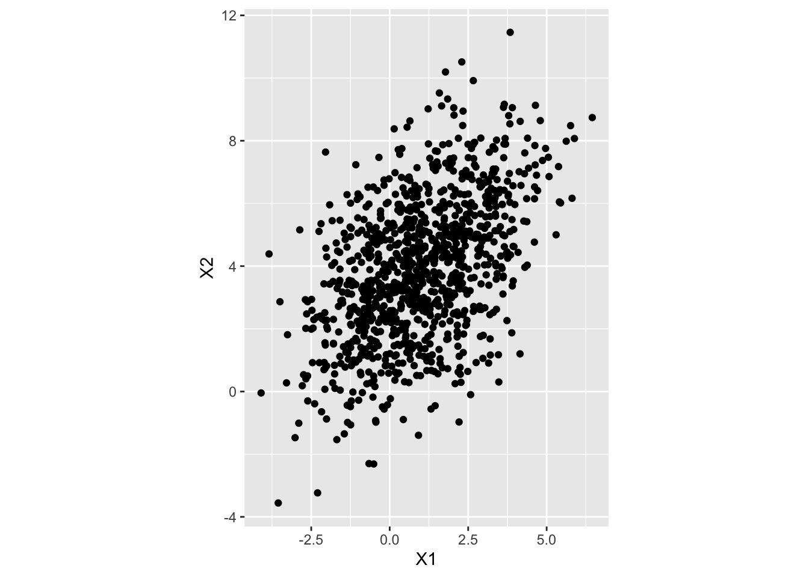

Chapter 9 Maximum Likelihood Estimation
Consider the problem of estimating a parameter in a model. For example, if we take a random sample from a normal distribution with unknown mean \(\mu\) and variance 1, what is a good estimator for \(\mu\)? I hope you immediately think of the sample mean \(\overline{x}\). How could we come to that decision systematically, though? And what if the parameter doesn’t have quite the same obvious interpretation as \(\mu\) from a normal distribution?
We will use the method of maximum likelihood. Realistically, I should have talked about this long ago in class, but we are going to do it now.
Given a probability density function \(f\) of a random variable \(X\), we can associate the value of \(f(x)\) with the relative likelihood that \(x\) is an observed value from \(X\). The values themselves don’t mean much, but if \(f(x) = 2f(y)\), then we can say that \(x\) is twice as likely as \(y\). If we have a single observation from \(X\) which is normally distributed with mean \(\mu\), the most likely outcome is the mean, \(\mu\).
Now, we can turn the thought process upside down. Suppose we don’t know the value of \(\mu\), but we observe a single value \(x\). The value of \(\mu\) which makes \(x\) most likely is \(x\) itself5. Let’s check that really is true.
like_fun <- function(mu) {
dnorm(x, mean = mu, sd = 1)
}
x <- 2
optimize(like_fun, interval = c(-8, 8), maximum = T)## $maximum
## [1] 2.000015
##
## $objective
## [1] 0.3989423If you try a few more values of \(x\), you will see that indeed, this is the case.
OK, but how would we do this if we have more than one value of \(x\)? We would then compute the likelihood function given all of the samples. If the samples are independent (a common assumption, but not the case in mixed models), then we can just multiply the separate pdfs together. Let’s see how to do it if we have a sample of size \(n = 4\) consisting of c(1, 2, 3, 4).
like_fun <- function(mu) {
prod(dnorm(x, mean = mu, sd = 1))
}
x <- c(1, 2, 3, 4)
optimize(like_fun, interval = c(-8, 8), maximum = T)## $maximum
## [1] 2.500003
##
## $objective
## [1] 0.002079237This works fine for small data sets, but when we have a lot of data, the product of the pdfs could get extermely small. It is better to minimze the negative of the log of the likelihood. We also have to change prod to sum.
like_fun <- function(mu) {
sum(dnorm(x, mean = mu, sd = 1, log = T))
}
x <- c(1, 2, 3, 4)
optimize(like_fun, interval = c(-8, 8), maximum = T)## $maximum
## [1] 2.5
##
## $objective
## [1] -6.175754OK, now what if we have two parameters that we need to estimate simultaneously? There are several things that need to change:
- We have to pass two parameters to our likelihood function instead of just one.
- We have to use
optiminstead ofoptimize - We have to provide
optimwith a starting estimate. optimwill only minimize, so we need to minimize negative likelihood, which is the same as maximizing positive likelihood.
It works like this in the case we are estimating the mean and the standard deviation.
x <- c(1, 2, 3, 4)
like_fun <- function(par) {
mu <- par[1]
sigma <- par[2]
-sum(dnorm(x, mu, sigma, log = T))
}
optim(par = c(1, 1), fn = like_fun, lower = c(-Inf, 0.001), method = "L-BFGS-B")## $par
## [1] 2.500001 1.118036
##
## $value
## [1] 6.122041
##
## $counts
## function gradient
## 14 14
##
## $convergence
## [1] 0
##
## $message
## [1] "CONVERGENCE: REL_REDUCTION_OF_F <= FACTR*EPSMCH"This works quite generally. If we have data between 0 and 1 and we wish to estimate the parameters associated with a beta distribution, we can do the following:
set.seed(1)
shapes <- sample(1:50, 2)
data <- rbeta(30, shape1 = shapes[1], shape2 = shapes[2])
like_fun <- function(par) {
shape1 <- par[1]
shape2 <- par[2]
-sum(dbeta(data, shape1, shape2, log = T))
}
oo <- optim(par = c(1, 1), fn = like_fun, lower = c(-0.01, 0.01), method = "L-BFGS-B")
oo## $par
## [1] 5.252771 53.286377
##
## $value
## [1] -57.80793
##
## $counts
## function gradient
## 20 20
##
## $convergence
## [1] 0
##
## $message
## [1] "CONVERGENCE: REL_REDUCTION_OF_F <= FACTR*EPSMCH"Are estimates are 5.252771 for shape1 and 53.2863773 for shape2. If we have data that follows the model
\[
y_i = \beta_0 + \beta_1 x_i + \epsilon_i
\]
where \(\epsilon_i\) are iid \(N(0, \sigma)\) random variables, then it gets a little bit more complicated. We would do it like this. We suppose we want to estimate the parameters associated with modeling imu_top_speed_ms on stride_length_m in the data set ardata::running_speed. The main thing to notice is that the values of \(y_i\) are independent, normally distributed with mean \(\beta_0 + \beta_1 x_i\) and variance \(\sigma^2\).
rr <- ardata::running_speed
like_fun <- function(par) {
beta0 <- par[1]
beta1 <- par[2]
sigma <- par[3]
-sum(dnorm(rr$imu_top_speed_ms, beta0 + beta1 * rr$stride_length_m, sigma, log = T))
}
oo <- optim(par = c(1, 1, 1), fn = like_fun, lower = c(-Inf, -Inf, 0.01), method = "L-BFGS-B")
oo$par## [1] 2.2157883 1.5566788 0.5272198##
## Call:
## lm(formula = imu_top_speed_ms ~ stride_length_m, data = rr)
##
## Coefficients:
## (Intercept) stride_length_m
## 2.216 1.5579.1 MLE for mixed models
How does lmer estimate the parameters in our models? lmer uses maximum likelihood estimation (MLE) to estimate the parameters of the model. The likelihood function is based on the assumption that the random effects and the residuals are normally distributed. The MLE approach finds the parameter values that maximize the likelihood of observing the data given the model. In practice, lmer uses two different algorithms for estimating the parameters. The one we will discuss is MLE.
Let’s look at an example.
## ── Attaching core tidyverse packages ──────────────────────── tidyverse 2.0.0 ──
## ✔ dplyr 1.2.0 ✔ readr 2.1.5
## ✔ forcats 1.0.0 ✔ stringr 1.5.1
## ✔ ggplot2 4.0.0 ✔ tibble 3.3.0
## ✔ lubridate 1.9.4 ✔ tidyr 1.3.1
## ✔ purrr 1.1.0
## ── Conflicts ────────────────────────────────────────── tidyverse_conflicts() ──
## ✖ dplyr::filter() masks stats::filter()
## ✖ dplyr::lag() masks stats::lag()
## ℹ Use the conflicted package (<http://conflicted.r-lib.org/>) to force all conflicts to become errorsWe estimate the parameters involved with a random intercepts model. To set notation, the mathematical formulation of this model is
\[ \text{reaction}_{ij} = \gamma_{00} + \beta_1 \text{days}_{ij} + u_{0i} + \epsilon_{ij} \]
We can start by getting reasonable guesses for the values.
##
## Call:
## lm(formula = reaction ~ days + subject, data = ss)
##
## Residuals:
## Min 1Q Median 3Q Max
## -100.540 -16.389 -0.341 15.215 131.159
##
## Coefficients:
## Estimate Std. Error t value Pr(>|t|)
## (Intercept) 295.0310 10.4471 28.240 < 2e-16 ***
## days 10.4673 0.8042 13.015 < 2e-16 ***
## subject309 -126.9008 13.8597 -9.156 2.35e-16 ***
## subject310 -111.1326 13.8597 -8.018 2.07e-13 ***
## subject330 -38.9124 13.8597 -2.808 0.005609 **
## subject331 -32.6978 13.8597 -2.359 0.019514 *
## subject332 -34.8318 13.8597 -2.513 0.012949 *
## subject333 -25.9755 13.8597 -1.874 0.062718 .
## subject334 -46.8318 13.8597 -3.379 0.000913 ***
## subject335 -92.0638 13.8597 -6.643 4.51e-10 ***
## subject337 33.5872 13.8597 2.423 0.016486 *
## subject349 -66.2994 13.8597 -4.784 3.87e-06 ***
## subject350 -28.5312 13.8597 -2.059 0.041147 *
## subject351 -52.0361 13.8597 -3.754 0.000242 ***
## subject352 -4.7123 13.8597 -0.340 0.734300
## subject369 -36.0992 13.8597 -2.605 0.010059 *
## subject370 -50.4321 13.8597 -3.639 0.000369 ***
## subject371 -47.1498 13.8597 -3.402 0.000844 ***
## subject372 -24.2477 13.8597 -1.750 0.082108 .
## ---
## Signif. codes: 0 '***' 0.001 '**' 0.01 '*' 0.05 '.' 0.1 ' ' 1
##
## Residual standard error: 30.99 on 161 degrees of freedom
## Multiple R-squared: 0.7277, Adjusted R-squared: 0.6973
## F-statistic: 23.91 on 18 and 161 DF, p-value: < 2.2e-16We can guess that \(\gamma_{00} \approx 295\) and \(\beta_1 \approx 10.5\). The variance of the residuals is approximately \(31^2\) (it will likely be less, depending on how much variance is explained by the random intercept). Now we need to estimate the variance of the random intercepts. We can get a rough estimate of this by looking at the variance of the subject means.
## subject309 subject310 subject330 subject331 subject332 subject333
## 295.0000 168.0992 183.8674 256.0876 262.3022 260.1682 269.0245
## subject334 subject335 subject337 subject349 subject350 subject351 subject352
## 248.1682 202.9362 328.5872 228.7006 266.4688 242.9639 290.2877
## subject369 subject370 subject371 subject372
## 258.9008 244.5679 247.8502 270.7523## [1] 1474.224The variance of the intercepts is about \(1474\). The final estimated value will likely be smaller than this.
Let’s see what lmer gives.
## Linear mixed model fit by REML ['lmerMod']
## Formula: reaction ~ days + (1 | subject)
## Data: ss
##
## REML criterion at convergence: 1786.5
##
## Scaled residuals:
## Min 1Q Median 3Q Max
## -3.2257 -0.5529 0.0109 0.5188 4.2506
##
## Random effects:
## Groups Name Variance Std.Dev.
## subject (Intercept) 1378.2 37.12
## Residual 960.5 30.99
## Number of obs: 180, groups: subject, 18
##
## Fixed effects:
## Estimate Std. Error t value
## (Intercept) 251.4051 9.7467 25.79
## days 10.4673 0.8042 13.02
##
## Correlation of Fixed Effects:
## (Intr)
## days -0.371Our values are pretty close.
We can use these values as starting points for the optimization algorithm that lmer uses to find the MLE estimates. Using our mathematical model of reaction, we can see that each response is a function of the fixed effects, the random effects, and the residuals. The distribution of a single response is
\[ y_{ij} \sim N(\gamma_{00} + \beta_1 x_{ij}, \tau^2 + \sigma^2) \]
where here we use the assumption that \(u_{0i} \sim N(0, \tau^2)\) and \(\epsilon_{ij} \sim N(0, \sigma^2)\) are independent. The likelihood function is the product of the probability density functions for each response, which is a function of the parameters \(\gamma_{00}\), \(\beta_1\), \(\tau^2\), and \(\sigma^2\). The MLE estimates are the values of these parameters that maximize the likelihood function.
When we do this, we will maximize the log of the likelihood function, in order to keep values reasonably sized.
#This isn't correct
like <- function(par) {
gamma <- par[1]
beta <- par[2]
tau2 <- par[3]
sigma2 <- par[4]
mu <- gamma + beta * ss$days
var <- tau2 + sigma2
-sum(dnorm(ss$reaction, mean = mu, sd = sqrt(var), log = TRUE))
}
like(c(295, 10.5, 1474, 961))## [1] 1021.136oo <- optim(par = c(295, 10.5, 1474, 961), fn = like, method = "L-BFGS-B", lower = c(-Inf, -Inf, 0, 0))## [1] 950.1465tidy_modlmer <- broom.mixed::tidy(mod_lmer)
like(c(tidy_modlmer$estimate[1], tidy_modlmer$estimate[2], tidy_modlmer$estimate[3]^2, tidy_modlmer$estimate[4]^2))## [1] 950.2107We can see that we don’t quite get the fully correct answer. This is because we haven’t correctly described the likelihood function for a mixed effect model. The likelihood function for a mixed effect model is more complicated than the one we wrote down above, because it allows correlation within subjects. The likelihood function for a mixed effect model is based on the joint distribution of the responses for each subject, which is a multivariate normal distribution with mean vector and covariance matrix that depend on the fixed effects and the random effects. While the marginal distribution of each response is normal, the joint distribution of the responses for each subject is multivariate normal with correlation between responses from the same subject. This is fundamentally different than what we were doing in the previous section, because now we have to compute the joint likelihood of the entire sample directly, rather than multiplying the likelihood of the samples together.
How would that work for linear regression
Let’s return to the same example we did earlier with running speed. We have to understand multivariate normal distributions to some extent, so here we go. The multivariate normal distribution is a generalization of the univariate normal distribution to multiple dimensions. Its parameters are a mean vector and a covariance matrix. The mean vector gives the expected value of each variable, while the covariance matrix gives the variance of each variable and the covariance between each pair of variables. In the following example, we will look at the joint distribution of \((X_1, X_2)\), so the length of the mean vector will be 2 and the covariance matrix will be \(2 \times 2\).
Sigma <- matrix(c(3, 2, 2, 5), nrow = 2)
eigen(Sigma) #this is a positive definite matrix, so it is a valid covariance matrix## eigen() decomposition
## $values
## [1] 6.236068 1.763932
##
## $vectors
## [,1] [,2]
## [1,] 0.5257311 -0.8506508
## [2,] 0.8506508 0.5257311library(mvtnorm)
dat <- mvtnorm::rmvnorm(n = 1000, mean = c(1, 4), sigma = Sigma)
dd <- data.frame(dat)
library(tidyverse)
ggplot(dd, aes(x = X1, y = X2)) +
geom_point() +
coord_equal() 
To force independence of the coordinates, we set the covariances equal to zero. Note that for general rvs, uncorrelated does not imply independent, but for multivariate normal rvs, uncorrelated does imply independent.
We can also re-estimate the mean vector and the covariance matrix using MLE as follows:
like_fun <- function(par) {
mu <- c(par[1], par[2])
sigma <- matrix(c(par[3], par[4], par[4], par[5]), nrow = 2)
-sum(dmvnorm(dat, mean = mu, sigma = sigma, log = T))
}
tryCatch(optim(par = c(1, 1, 3, 1, 5), fn = like_fun, lower = c(-Inf, -Inf, 0.1, 0.1, 0.1), method = "L-BFGS-B"),
error = function(e) print("The covariance matrix is not positive definite"))## $par
## [1] 0.9675064 3.9193232 3.1357536 1.9141789 4.9587980
##
## $value
## [1] 4075.551
##
## $counts
## function gradient
## 16 16
##
## $convergence
## [1] 0
##
## $message
## [1] "CONVERGENCE: REL_REDUCTION_OF_F <= FACTR*EPSMCH"Returning to mixed models
Suppose optim() gives us one specific set of parameter values:
Right now, we are not optimizing.
We are simply asking:
If these were the true parameter values, how likely would our observed data be?
To answer that, we must compute the likelihood of the data under this model.
Step 1: Compute the Predicted Mean
The fixed-effects part of our model is
This is exactly what we would compute in ordinary regression.
So far, nothing new.
This gives us the predicted mean reaction time for each observation.
Step 2: Why We Cannot Multiply Independent Densities
In ordinary regression, we assume the observations are independent.
That means the likelihood is just:
Multiply one normal density for each observation.
But in a random intercept model, observations from the same subject share the same random intercept.
That means:
- Observations from the same subject are correlated.
- Observations from different subjects are independent.
So we cannot multiply independent densities anymore.
Instead, we must use a multivariate normal distribution that accounts for correlation.
** Step 3: Build the Grouping Matrix**
We create a factor indicating subject membership:
## g308 g309 g310 g330 g331 g332 g333 g334 g335 g337 g349 g350 g351 g352 g369
## 1 1 0 0 0 0 0 0 0 0 0 0 0 0 0 0
## 2 1 0 0 0 0 0 0 0 0 0 0 0 0 0 0
## 3 1 0 0 0 0 0 0 0 0 0 0 0 0 0 0
## 4 1 0 0 0 0 0 0 0 0 0 0 0 0 0 0
## 5 1 0 0 0 0 0 0 0 0 0 0 0 0 0 0
## 6 1 0 0 0 0 0 0 0 0 0 0 0 0 0 0
## 7 1 0 0 0 0 0 0 0 0 0 0 0 0 0 0
## 8 1 0 0 0 0 0 0 0 0 0 0 0 0 0 0
## 9 1 0 0 0 0 0 0 0 0 0 0 0 0 0 0
## 10 1 0 0 0 0 0 0 0 0 0 0 0 0 0 0
## 11 0 1 0 0 0 0 0 0 0 0 0 0 0 0 0
## 12 0 1 0 0 0 0 0 0 0 0 0 0 0 0 0
## 13 0 1 0 0 0 0 0 0 0 0 0 0 0 0 0
## 14 0 1 0 0 0 0 0 0 0 0 0 0 0 0 0
## 15 0 1 0 0 0 0 0 0 0 0 0 0 0 0 0
## 16 0 1 0 0 0 0 0 0 0 0 0 0 0 0 0
## 17 0 1 0 0 0 0 0 0 0 0 0 0 0 0 0
## 18 0 1 0 0 0 0 0 0 0 0 0 0 0 0 0
## 19 0 1 0 0 0 0 0 0 0 0 0 0 0 0 0
## 20 0 1 0 0 0 0 0 0 0 0 0 0 0 0 0
## 21 0 0 1 0 0 0 0 0 0 0 0 0 0 0 0
## 22 0 0 1 0 0 0 0 0 0 0 0 0 0 0 0
## 23 0 0 1 0 0 0 0 0 0 0 0 0 0 0 0
## 24 0 0 1 0 0 0 0 0 0 0 0 0 0 0 0
## 25 0 0 1 0 0 0 0 0 0 0 0 0 0 0 0
## 26 0 0 1 0 0 0 0 0 0 0 0 0 0 0 0
## 27 0 0 1 0 0 0 0 0 0 0 0 0 0 0 0
## 28 0 0 1 0 0 0 0 0 0 0 0 0 0 0 0
## 29 0 0 1 0 0 0 0 0 0 0 0 0 0 0 0
## 30 0 0 1 0 0 0 0 0 0 0 0 0 0 0 0
## 31 0 0 0 1 0 0 0 0 0 0 0 0 0 0 0
## 32 0 0 0 1 0 0 0 0 0 0 0 0 0 0 0
## 33 0 0 0 1 0 0 0 0 0 0 0 0 0 0 0
## 34 0 0 0 1 0 0 0 0 0 0 0 0 0 0 0
## 35 0 0 0 1 0 0 0 0 0 0 0 0 0 0 0
## 36 0 0 0 1 0 0 0 0 0 0 0 0 0 0 0
## 37 0 0 0 1 0 0 0 0 0 0 0 0 0 0 0
## 38 0 0 0 1 0 0 0 0 0 0 0 0 0 0 0
## 39 0 0 0 1 0 0 0 0 0 0 0 0 0 0 0
## 40 0 0 0 1 0 0 0 0 0 0 0 0 0 0 0
## 41 0 0 0 0 1 0 0 0 0 0 0 0 0 0 0
## 42 0 0 0 0 1 0 0 0 0 0 0 0 0 0 0
## 43 0 0 0 0 1 0 0 0 0 0 0 0 0 0 0
## 44 0 0 0 0 1 0 0 0 0 0 0 0 0 0 0
## 45 0 0 0 0 1 0 0 0 0 0 0 0 0 0 0
## 46 0 0 0 0 1 0 0 0 0 0 0 0 0 0 0
## 47 0 0 0 0 1 0 0 0 0 0 0 0 0 0 0
## 48 0 0 0 0 1 0 0 0 0 0 0 0 0 0 0
## 49 0 0 0 0 1 0 0 0 0 0 0 0 0 0 0
## 50 0 0 0 0 1 0 0 0 0 0 0 0 0 0 0
## 51 0 0 0 0 0 1 0 0 0 0 0 0 0 0 0
## 52 0 0 0 0 0 1 0 0 0 0 0 0 0 0 0
## 53 0 0 0 0 0 1 0 0 0 0 0 0 0 0 0
## 54 0 0 0 0 0 1 0 0 0 0 0 0 0 0 0
## 55 0 0 0 0 0 1 0 0 0 0 0 0 0 0 0
## 56 0 0 0 0 0 1 0 0 0 0 0 0 0 0 0
## 57 0 0 0 0 0 1 0 0 0 0 0 0 0 0 0
## 58 0 0 0 0 0 1 0 0 0 0 0 0 0 0 0
## 59 0 0 0 0 0 1 0 0 0 0 0 0 0 0 0
## 60 0 0 0 0 0 1 0 0 0 0 0 0 0 0 0
## 61 0 0 0 0 0 0 1 0 0 0 0 0 0 0 0
## 62 0 0 0 0 0 0 1 0 0 0 0 0 0 0 0
## 63 0 0 0 0 0 0 1 0 0 0 0 0 0 0 0
## 64 0 0 0 0 0 0 1 0 0 0 0 0 0 0 0
## 65 0 0 0 0 0 0 1 0 0 0 0 0 0 0 0
## 66 0 0 0 0 0 0 1 0 0 0 0 0 0 0 0
## 67 0 0 0 0 0 0 1 0 0 0 0 0 0 0 0
## 68 0 0 0 0 0 0 1 0 0 0 0 0 0 0 0
## 69 0 0 0 0 0 0 1 0 0 0 0 0 0 0 0
## 70 0 0 0 0 0 0 1 0 0 0 0 0 0 0 0
## 71 0 0 0 0 0 0 0 1 0 0 0 0 0 0 0
## 72 0 0 0 0 0 0 0 1 0 0 0 0 0 0 0
## 73 0 0 0 0 0 0 0 1 0 0 0 0 0 0 0
## 74 0 0 0 0 0 0 0 1 0 0 0 0 0 0 0
## 75 0 0 0 0 0 0 0 1 0 0 0 0 0 0 0
## 76 0 0 0 0 0 0 0 1 0 0 0 0 0 0 0
## 77 0 0 0 0 0 0 0 1 0 0 0 0 0 0 0
## 78 0 0 0 0 0 0 0 1 0 0 0 0 0 0 0
## 79 0 0 0 0 0 0 0 1 0 0 0 0 0 0 0
## 80 0 0 0 0 0 0 0 1 0 0 0 0 0 0 0
## 81 0 0 0 0 0 0 0 0 1 0 0 0 0 0 0
## 82 0 0 0 0 0 0 0 0 1 0 0 0 0 0 0
## 83 0 0 0 0 0 0 0 0 1 0 0 0 0 0 0
## 84 0 0 0 0 0 0 0 0 1 0 0 0 0 0 0
## 85 0 0 0 0 0 0 0 0 1 0 0 0 0 0 0
## 86 0 0 0 0 0 0 0 0 1 0 0 0 0 0 0
## 87 0 0 0 0 0 0 0 0 1 0 0 0 0 0 0
## 88 0 0 0 0 0 0 0 0 1 0 0 0 0 0 0
## 89 0 0 0 0 0 0 0 0 1 0 0 0 0 0 0
## 90 0 0 0 0 0 0 0 0 1 0 0 0 0 0 0
## 91 0 0 0 0 0 0 0 0 0 1 0 0 0 0 0
## 92 0 0 0 0 0 0 0 0 0 1 0 0 0 0 0
## 93 0 0 0 0 0 0 0 0 0 1 0 0 0 0 0
## 94 0 0 0 0 0 0 0 0 0 1 0 0 0 0 0
## 95 0 0 0 0 0 0 0 0 0 1 0 0 0 0 0
## 96 0 0 0 0 0 0 0 0 0 1 0 0 0 0 0
## 97 0 0 0 0 0 0 0 0 0 1 0 0 0 0 0
## 98 0 0 0 0 0 0 0 0 0 1 0 0 0 0 0
## 99 0 0 0 0 0 0 0 0 0 1 0 0 0 0 0
## 100 0 0 0 0 0 0 0 0 0 1 0 0 0 0 0
## 101 0 0 0 0 0 0 0 0 0 0 1 0 0 0 0
## 102 0 0 0 0 0 0 0 0 0 0 1 0 0 0 0
## 103 0 0 0 0 0 0 0 0 0 0 1 0 0 0 0
## 104 0 0 0 0 0 0 0 0 0 0 1 0 0 0 0
## 105 0 0 0 0 0 0 0 0 0 0 1 0 0 0 0
## 106 0 0 0 0 0 0 0 0 0 0 1 0 0 0 0
## 107 0 0 0 0 0 0 0 0 0 0 1 0 0 0 0
## 108 0 0 0 0 0 0 0 0 0 0 1 0 0 0 0
## 109 0 0 0 0 0 0 0 0 0 0 1 0 0 0 0
## 110 0 0 0 0 0 0 0 0 0 0 1 0 0 0 0
## 111 0 0 0 0 0 0 0 0 0 0 0 1 0 0 0
## 112 0 0 0 0 0 0 0 0 0 0 0 1 0 0 0
## 113 0 0 0 0 0 0 0 0 0 0 0 1 0 0 0
## 114 0 0 0 0 0 0 0 0 0 0 0 1 0 0 0
## 115 0 0 0 0 0 0 0 0 0 0 0 1 0 0 0
## 116 0 0 0 0 0 0 0 0 0 0 0 1 0 0 0
## 117 0 0 0 0 0 0 0 0 0 0 0 1 0 0 0
## 118 0 0 0 0 0 0 0 0 0 0 0 1 0 0 0
## 119 0 0 0 0 0 0 0 0 0 0 0 1 0 0 0
## 120 0 0 0 0 0 0 0 0 0 0 0 1 0 0 0
## 121 0 0 0 0 0 0 0 0 0 0 0 0 1 0 0
## 122 0 0 0 0 0 0 0 0 0 0 0 0 1 0 0
## 123 0 0 0 0 0 0 0 0 0 0 0 0 1 0 0
## 124 0 0 0 0 0 0 0 0 0 0 0 0 1 0 0
## 125 0 0 0 0 0 0 0 0 0 0 0 0 1 0 0
## 126 0 0 0 0 0 0 0 0 0 0 0 0 1 0 0
## 127 0 0 0 0 0 0 0 0 0 0 0 0 1 0 0
## 128 0 0 0 0 0 0 0 0 0 0 0 0 1 0 0
## 129 0 0 0 0 0 0 0 0 0 0 0 0 1 0 0
## 130 0 0 0 0 0 0 0 0 0 0 0 0 1 0 0
## 131 0 0 0 0 0 0 0 0 0 0 0 0 0 1 0
## 132 0 0 0 0 0 0 0 0 0 0 0 0 0 1 0
## 133 0 0 0 0 0 0 0 0 0 0 0 0 0 1 0
## 134 0 0 0 0 0 0 0 0 0 0 0 0 0 1 0
## 135 0 0 0 0 0 0 0 0 0 0 0 0 0 1 0
## 136 0 0 0 0 0 0 0 0 0 0 0 0 0 1 0
## 137 0 0 0 0 0 0 0 0 0 0 0 0 0 1 0
## 138 0 0 0 0 0 0 0 0 0 0 0 0 0 1 0
## 139 0 0 0 0 0 0 0 0 0 0 0 0 0 1 0
## 140 0 0 0 0 0 0 0 0 0 0 0 0 0 1 0
## 141 0 0 0 0 0 0 0 0 0 0 0 0 0 0 1
## 142 0 0 0 0 0 0 0 0 0 0 0 0 0 0 1
## 143 0 0 0 0 0 0 0 0 0 0 0 0 0 0 1
## 144 0 0 0 0 0 0 0 0 0 0 0 0 0 0 1
## 145 0 0 0 0 0 0 0 0 0 0 0 0 0 0 1
## 146 0 0 0 0 0 0 0 0 0 0 0 0 0 0 1
## 147 0 0 0 0 0 0 0 0 0 0 0 0 0 0 1
## 148 0 0 0 0 0 0 0 0 0 0 0 0 0 0 1
## 149 0 0 0 0 0 0 0 0 0 0 0 0 0 0 1
## 150 0 0 0 0 0 0 0 0 0 0 0 0 0 0 1
## 151 0 0 0 0 0 0 0 0 0 0 0 0 0 0 0
## 152 0 0 0 0 0 0 0 0 0 0 0 0 0 0 0
## 153 0 0 0 0 0 0 0 0 0 0 0 0 0 0 0
## 154 0 0 0 0 0 0 0 0 0 0 0 0 0 0 0
## 155 0 0 0 0 0 0 0 0 0 0 0 0 0 0 0
## 156 0 0 0 0 0 0 0 0 0 0 0 0 0 0 0
## 157 0 0 0 0 0 0 0 0 0 0 0 0 0 0 0
## 158 0 0 0 0 0 0 0 0 0 0 0 0 0 0 0
## 159 0 0 0 0 0 0 0 0 0 0 0 0 0 0 0
## 160 0 0 0 0 0 0 0 0 0 0 0 0 0 0 0
## 161 0 0 0 0 0 0 0 0 0 0 0 0 0 0 0
## 162 0 0 0 0 0 0 0 0 0 0 0 0 0 0 0
## 163 0 0 0 0 0 0 0 0 0 0 0 0 0 0 0
## 164 0 0 0 0 0 0 0 0 0 0 0 0 0 0 0
## 165 0 0 0 0 0 0 0 0 0 0 0 0 0 0 0
## 166 0 0 0 0 0 0 0 0 0 0 0 0 0 0 0
## 167 0 0 0 0 0 0 0 0 0 0 0 0 0 0 0
## 168 0 0 0 0 0 0 0 0 0 0 0 0 0 0 0
## 169 0 0 0 0 0 0 0 0 0 0 0 0 0 0 0
## 170 0 0 0 0 0 0 0 0 0 0 0 0 0 0 0
## 171 0 0 0 0 0 0 0 0 0 0 0 0 0 0 0
## 172 0 0 0 0 0 0 0 0 0 0 0 0 0 0 0
## 173 0 0 0 0 0 0 0 0 0 0 0 0 0 0 0
## 174 0 0 0 0 0 0 0 0 0 0 0 0 0 0 0
## 175 0 0 0 0 0 0 0 0 0 0 0 0 0 0 0
## 176 0 0 0 0 0 0 0 0 0 0 0 0 0 0 0
## 177 0 0 0 0 0 0 0 0 0 0 0 0 0 0 0
## 178 0 0 0 0 0 0 0 0 0 0 0 0 0 0 0
## 179 0 0 0 0 0 0 0 0 0 0 0 0 0 0 0
## 180 0 0 0 0 0 0 0 0 0 0 0 0 0 0 0
## g370 g371 g372
## 1 0 0 0
## 2 0 0 0
## 3 0 0 0
## 4 0 0 0
## 5 0 0 0
## 6 0 0 0
## 7 0 0 0
## 8 0 0 0
## 9 0 0 0
## 10 0 0 0
## 11 0 0 0
## 12 0 0 0
## 13 0 0 0
## 14 0 0 0
## 15 0 0 0
## 16 0 0 0
## 17 0 0 0
## 18 0 0 0
## 19 0 0 0
## 20 0 0 0
## 21 0 0 0
## 22 0 0 0
## 23 0 0 0
## 24 0 0 0
## 25 0 0 0
## 26 0 0 0
## 27 0 0 0
## 28 0 0 0
## 29 0 0 0
## 30 0 0 0
## 31 0 0 0
## 32 0 0 0
## 33 0 0 0
## 34 0 0 0
## 35 0 0 0
## 36 0 0 0
## 37 0 0 0
## 38 0 0 0
## 39 0 0 0
## 40 0 0 0
## 41 0 0 0
## 42 0 0 0
## 43 0 0 0
## 44 0 0 0
## 45 0 0 0
## 46 0 0 0
## 47 0 0 0
## 48 0 0 0
## 49 0 0 0
## 50 0 0 0
## 51 0 0 0
## 52 0 0 0
## 53 0 0 0
## 54 0 0 0
## 55 0 0 0
## 56 0 0 0
## 57 0 0 0
## 58 0 0 0
## 59 0 0 0
## 60 0 0 0
## 61 0 0 0
## 62 0 0 0
## 63 0 0 0
## 64 0 0 0
## 65 0 0 0
## 66 0 0 0
## 67 0 0 0
## 68 0 0 0
## 69 0 0 0
## 70 0 0 0
## 71 0 0 0
## 72 0 0 0
## 73 0 0 0
## 74 0 0 0
## 75 0 0 0
## 76 0 0 0
## 77 0 0 0
## 78 0 0 0
## 79 0 0 0
## 80 0 0 0
## 81 0 0 0
## 82 0 0 0
## 83 0 0 0
## 84 0 0 0
## 85 0 0 0
## 86 0 0 0
## 87 0 0 0
## 88 0 0 0
## 89 0 0 0
## 90 0 0 0
## 91 0 0 0
## 92 0 0 0
## 93 0 0 0
## 94 0 0 0
## 95 0 0 0
## 96 0 0 0
## 97 0 0 0
## 98 0 0 0
## 99 0 0 0
## 100 0 0 0
## 101 0 0 0
## 102 0 0 0
## 103 0 0 0
## 104 0 0 0
## 105 0 0 0
## 106 0 0 0
## 107 0 0 0
## 108 0 0 0
## 109 0 0 0
## 110 0 0 0
## 111 0 0 0
## 112 0 0 0
## 113 0 0 0
## 114 0 0 0
## 115 0 0 0
## 116 0 0 0
## 117 0 0 0
## 118 0 0 0
## 119 0 0 0
## 120 0 0 0
## 121 0 0 0
## 122 0 0 0
## 123 0 0 0
## 124 0 0 0
## 125 0 0 0
## 126 0 0 0
## 127 0 0 0
## 128 0 0 0
## 129 0 0 0
## 130 0 0 0
## 131 0 0 0
## 132 0 0 0
## 133 0 0 0
## 134 0 0 0
## 135 0 0 0
## 136 0 0 0
## 137 0 0 0
## 138 0 0 0
## 139 0 0 0
## 140 0 0 0
## 141 0 0 0
## 142 0 0 0
## 143 0 0 0
## 144 0 0 0
## 145 0 0 0
## 146 0 0 0
## 147 0 0 0
## 148 0 0 0
## 149 0 0 0
## 150 0 0 0
## 151 1 0 0
## 152 1 0 0
## 153 1 0 0
## 154 1 0 0
## 155 1 0 0
## 156 1 0 0
## 157 1 0 0
## 158 1 0 0
## 159 1 0 0
## 160 1 0 0
## 161 0 1 0
## 162 0 1 0
## 163 0 1 0
## 164 0 1 0
## 165 0 1 0
## 166 0 1 0
## 167 0 1 0
## 168 0 1 0
## 169 0 1 0
## 170 0 1 0
## 171 0 0 1
## 172 0 0 1
## 173 0 0 1
## 174 0 0 1
## 175 0 0 1
## 176 0 0 1
## 177 0 0 1
## 178 0 0 1
## 179 0 0 1
## 180 0 0 1
## attr(,"assign")
## [1] 1 1 1 1 1 1 1 1 1 1 1 1 1 1 1 1 1 1
## attr(,"contrasts")
## attr(,"contrasts")$g
## [1] "contr.treatment"What does Z do?
- Each row corresponds to one observation.
- Each column corresponds to one subject.
- Each row has a 1 in the column for that subject, and 0 elsewhere.
So Z simply records which subject each observation belongs to.
Step 4: Construct the Covariance Matrix
Here is the key line:
## 1 2 3 4 5 6 7 8 9 10 11 12 13 14 15 16 17 18 19 20
## 1 1 1 1 1 1 1 1 1 1 1 0 0 0 0 0 0 0 0 0 0
## 2 1 1 1 1 1 1 1 1 1 1 0 0 0 0 0 0 0 0 0 0
## 3 1 1 1 1 1 1 1 1 1 1 0 0 0 0 0 0 0 0 0 0
## 4 1 1 1 1 1 1 1 1 1 1 0 0 0 0 0 0 0 0 0 0
## 5 1 1 1 1 1 1 1 1 1 1 0 0 0 0 0 0 0 0 0 0
## 6 1 1 1 1 1 1 1 1 1 1 0 0 0 0 0 0 0 0 0 0
## 7 1 1 1 1 1 1 1 1 1 1 0 0 0 0 0 0 0 0 0 0
## 8 1 1 1 1 1 1 1 1 1 1 0 0 0 0 0 0 0 0 0 0
## 9 1 1 1 1 1 1 1 1 1 1 0 0 0 0 0 0 0 0 0 0
## 10 1 1 1 1 1 1 1 1 1 1 0 0 0 0 0 0 0 0 0 0
## 11 0 0 0 0 0 0 0 0 0 0 1 1 1 1 1 1 1 1 1 1
## 12 0 0 0 0 0 0 0 0 0 0 1 1 1 1 1 1 1 1 1 1
## 13 0 0 0 0 0 0 0 0 0 0 1 1 1 1 1 1 1 1 1 1
## 14 0 0 0 0 0 0 0 0 0 0 1 1 1 1 1 1 1 1 1 1
## 15 0 0 0 0 0 0 0 0 0 0 1 1 1 1 1 1 1 1 1 1
## 16 0 0 0 0 0 0 0 0 0 0 1 1 1 1 1 1 1 1 1 1
## 17 0 0 0 0 0 0 0 0 0 0 1 1 1 1 1 1 1 1 1 1
## 18 0 0 0 0 0 0 0 0 0 0 1 1 1 1 1 1 1 1 1 1
## 19 0 0 0 0 0 0 0 0 0 0 1 1 1 1 1 1 1 1 1 1
## 20 0 0 0 0 0 0 0 0 0 0 1 1 1 1 1 1 1 1 1 1## 1 2 3 4 5 6 7 8
## 1 2251.190 1382.095 1382.095 1382.095 1382.095 1382.095 1382.095 1382.095
## 2 1382.095 2251.190 1382.095 1382.095 1382.095 1382.095 1382.095 1382.095
## 3 1382.095 1382.095 2251.190 1382.095 1382.095 1382.095 1382.095 1382.095
## 4 1382.095 1382.095 1382.095 2251.190 1382.095 1382.095 1382.095 1382.095
## 5 1382.095 1382.095 1382.095 1382.095 2251.190 1382.095 1382.095 1382.095
## 6 1382.095 1382.095 1382.095 1382.095 1382.095 2251.190 1382.095 1382.095
## 7 1382.095 1382.095 1382.095 1382.095 1382.095 1382.095 2251.190 1382.095
## 8 1382.095 1382.095 1382.095 1382.095 1382.095 1382.095 1382.095 2251.190
## 9 1382.095 1382.095 1382.095 1382.095 1382.095 1382.095 1382.095 1382.095
## 10 1382.095 1382.095 1382.095 1382.095 1382.095 1382.095 1382.095 1382.095
## 11 0.000 0.000 0.000 0.000 0.000 0.000 0.000 0.000
## 12 0.000 0.000 0.000 0.000 0.000 0.000 0.000 0.000
## 13 0.000 0.000 0.000 0.000 0.000 0.000 0.000 0.000
## 14 0.000 0.000 0.000 0.000 0.000 0.000 0.000 0.000
## 15 0.000 0.000 0.000 0.000 0.000 0.000 0.000 0.000
## 16 0.000 0.000 0.000 0.000 0.000 0.000 0.000 0.000
## 17 0.000 0.000 0.000 0.000 0.000 0.000 0.000 0.000
## 18 0.000 0.000 0.000 0.000 0.000 0.000 0.000 0.000
## 19 0.000 0.000 0.000 0.000 0.000 0.000 0.000 0.000
## 20 0.000 0.000 0.000 0.000 0.000 0.000 0.000 0.000
## 9 10 11 12 13 14 15 16
## 1 1382.095 1382.095 0.000 0.000 0.000 0.000 0.000 0.000
## 2 1382.095 1382.095 0.000 0.000 0.000 0.000 0.000 0.000
## 3 1382.095 1382.095 0.000 0.000 0.000 0.000 0.000 0.000
## 4 1382.095 1382.095 0.000 0.000 0.000 0.000 0.000 0.000
## 5 1382.095 1382.095 0.000 0.000 0.000 0.000 0.000 0.000
## 6 1382.095 1382.095 0.000 0.000 0.000 0.000 0.000 0.000
## 7 1382.095 1382.095 0.000 0.000 0.000 0.000 0.000 0.000
## 8 1382.095 1382.095 0.000 0.000 0.000 0.000 0.000 0.000
## 9 2251.190 1382.095 0.000 0.000 0.000 0.000 0.000 0.000
## 10 1382.095 2251.190 0.000 0.000 0.000 0.000 0.000 0.000
## 11 0.000 0.000 2251.190 1382.095 1382.095 1382.095 1382.095 1382.095
## 12 0.000 0.000 1382.095 2251.190 1382.095 1382.095 1382.095 1382.095
## 13 0.000 0.000 1382.095 1382.095 2251.190 1382.095 1382.095 1382.095
## 14 0.000 0.000 1382.095 1382.095 1382.095 2251.190 1382.095 1382.095
## 15 0.000 0.000 1382.095 1382.095 1382.095 1382.095 2251.190 1382.095
## 16 0.000 0.000 1382.095 1382.095 1382.095 1382.095 1382.095 2251.190
## 17 0.000 0.000 1382.095 1382.095 1382.095 1382.095 1382.095 1382.095
## 18 0.000 0.000 1382.095 1382.095 1382.095 1382.095 1382.095 1382.095
## 19 0.000 0.000 1382.095 1382.095 1382.095 1382.095 1382.095 1382.095
## 20 0.000 0.000 1382.095 1382.095 1382.095 1382.095 1382.095 1382.095
## 17 18 19 20
## 1 0.000 0.000 0.000 0.000
## 2 0.000 0.000 0.000 0.000
## 3 0.000 0.000 0.000 0.000
## 4 0.000 0.000 0.000 0.000
## 5 0.000 0.000 0.000 0.000
## 6 0.000 0.000 0.000 0.000
## 7 0.000 0.000 0.000 0.000
## 8 0.000 0.000 0.000 0.000
## 9 0.000 0.000 0.000 0.000
## 10 0.000 0.000 0.000 0.000
## 11 1382.095 1382.095 1382.095 1382.095
## 12 1382.095 1382.095 1382.095 1382.095
## 13 1382.095 1382.095 1382.095 1382.095
## 14 1382.095 1382.095 1382.095 1382.095
## 15 1382.095 1382.095 1382.095 1382.095
## 16 1382.095 1382.095 1382.095 1382.095
## 17 2251.190 1382.095 1382.095 1382.095
## 18 1382.095 2251.190 1382.095 1382.095
## 19 1382.095 1382.095 2251.190 1382.095
## 20 1382.095 1382.095 1382.095 2251.190Let’s unpack this slowly.
9.1.1 What does Z %*% t(Z) do?
It creates an ( N N ) matrix where:
- Entries are 1 if two observations belong to the same subject.
- Entries are 0 otherwise.
So this matrix marks which observations share a random intercept.
9.1.2 What does multiplying by tau2 do?
It says:
If two observations belong to the same subject, their covariance is ( ^2 ).
This creates correlation within each subject.
9.1.3 What does sigma2 * diag(N) do?
This adds residual variance to the diagonal.
That ensures that:
- Each observation has total variance ( ^2 + ^2 ).
- Only observations from the same subject share covariance.
9.1.4 What does the final matrix represent?
The matrix V contains:
- Diagonal entries: total variance of each observation
- Off-diagonal entries within a subject: shared variance (
^2 )
- Off-diagonal entries across subjects: 0
So V encodes the entire correlation structure of the data.
This is the key difference between regression and mixed models.
Step 5: Evaluate the Multivariate Normal Density
Finally, we compute:
## [1] -897.4195This computes the log-likelihood of the entire response vector at once.
Instead of multiplying many independent normal densities, we now evaluate one multivariate normal density that accounts for:
- The mean structure
- The within-subject correlation
That single number is:
The log-likelihood of the data under this parameter choice.
In ordinary regression:
- Build the mean.
- Assume constant variance.
- Multiply independent normal densities.
In a mixed model:
- Build the mean.
- Carefully construct a covariance matrix that reflects the random effects.
- Evaluate one multivariate normal density.
The hardest part is building the covariance matrix correctly.
Once that is done, the rest is just plugging into the multivariate normal formula.
par <- oo$par
library(mvtnorm)
nll <- function(par) {
gamma <- par[1]
beta <- par[2]
tau2 <- par[3]
sigma2 <- par[4]
if (tau2 < 0 || sigma2 <= 0) return(Inf)
response <- ss$reaction
pred_fixed_effect <- gamma + beta * ss$days #this is the same as mu, which is a good check
g <- factor(ss$subject) #this is the grouping variable for the random intercepts)
Z <- model.matrix(~ 0 + g) # columns correspond to groups (levels of g)
N <- length(response)
V <- tau2 * (Z %*% t(Z)) + sigma2 * diag(N) # Marginal covariance: V = tau2 * Z Z' + sigma2 * I_N
-dmvnorm(response, mean = pred_fixed_effect, sigma = V, log = TRUE)
}
nll(par)## [1] 897.4195## $par
## [1] 251.40703 10.46715 1379.07124 954.27973
##
## $value
## [1] 897.0538
##
## $counts
## function gradient
## 15 15
##
## $convergence
## [1] 0
##
## $message
## [1] "CONVERGENCE: REL_REDUCTION_OF_F <= FACTR*EPSMCH"## Linear mixed model fit by REML ['lmerMod']
## Formula: reaction ~ days + (1 | subject)
## Data: ss
##
## REML criterion at convergence: 1786.5
##
## Scaled residuals:
## Min 1Q Median 3Q Max
## -3.2257 -0.5529 0.0109 0.5188 4.2506
##
## Random effects:
## Groups Name Variance Std.Dev.
## subject (Intercept) 1378.2 37.12
## Residual 960.5 30.99
## Number of obs: 180, groups: subject, 18
##
## Fixed effects:
## Estimate Std. Error t value
## (Intercept) 251.4051 9.7467 25.79
## days 10.4673 0.8042 13.02
##
## Correlation of Fixed Effects:
## (Intr)
## days -0.371citation needed↩︎